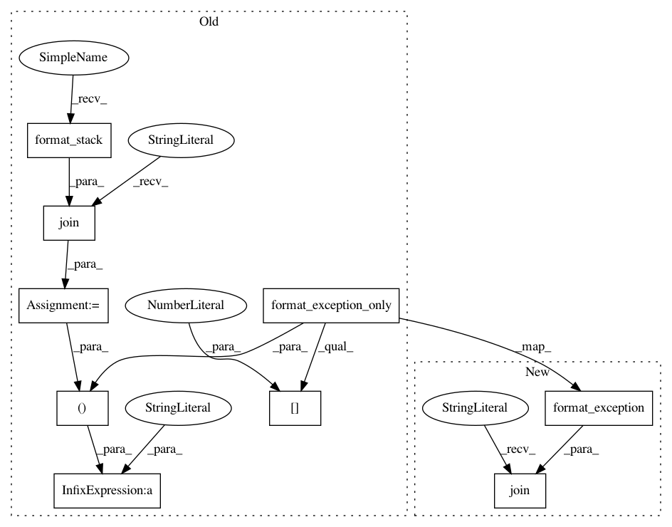

6197c9384538e59624831902f16051ddaed47233,modules/templates/default/monitor.py,S3Monitor,eden,#Any#Any#,67
Before Change
except requests.exceptions.Timeout:
import traceback
tb_parts = sys.exc_info()
exception_text = traceback.format_exception_only(tb_parts[0], tb_parts[1])[0]
stack_text = "".join(traceback.format_stack())
return {"result": "Critical: Timeout Error",
"status": 3,
"traceback": "%s\n%s\n%s" % (exception_text,
stack_text,
exception_text,
),
}
except requests.exceptions.TooManyRedirects:
import traceback
After Change
except requests.exceptions.Timeout:
import traceback
tb_parts = sys.exc_info()
tb_text = "".join(traceback.format_exception(tb_parts[0], tb_parts[1]))
return {"result": "Critical: Timeout Error",
"status": 3,
"traceback": tb_text,
}
In pattern: SUPERPATTERN
Frequency: 3
Non-data size: 9
Instances
Project Name: sahana/eden
Commit Name: 6197c9384538e59624831902f16051ddaed47233
Time: 2020-01-27
Author: fran@aidiq.com
File Name: modules/templates/default/monitor.py
Class Name: S3Monitor
Method Name: eden
Project Name: sahana/eden
Commit Name: 6197c9384538e59624831902f16051ddaed47233
Time: 2020-01-27
Author: fran@aidiq.com
File Name: modules/s3db/setup.py
Class Name:
Method Name: setup_monitor_run_task
Project Name: sahana/eden
Commit Name: 6197c9384538e59624831902f16051ddaed47233
Time: 2020-01-27
Author: fran@aidiq.com
File Name: modules/templates/default/monitor.py
Class Name: S3Monitor
Method Name: ping